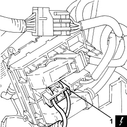
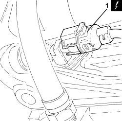
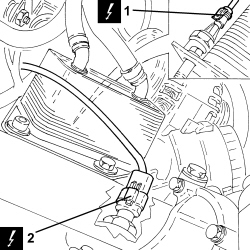
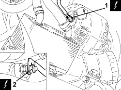
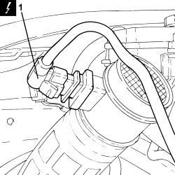
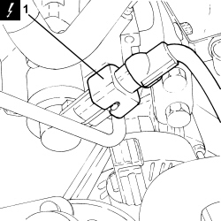
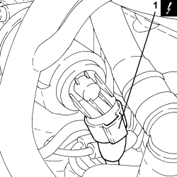
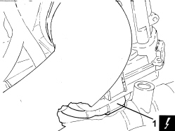

1060G90 SYSTEM CABLE LOOM - R.R.
- Path
- Procedures > 10 ENGINE > 1060 DIESEL INJECTION SYSTEM > 1060G DIESEL INJECTION PRESSURE PUMP ELECTRONIC CONTROL > 1060G90 SYSTEM CABLE LOOM - R.R.
- Kind
- repair procedure (removal / refitting; the operation number is the code)
- Applies to
- engines: 2.4 JTD 20v; all production periods
- Interactive page
- https://sloeber94.github.io/elrnDB-aBrrSpdr/en/#/946003005
Applies to: engines: 2.4 JTD 20v; all production periods
 Removing
Removing
 Refitting
Refitting- Position the vehicle on a lift.
Op. 1016A10 SOUND-PROOFING COVER - R.R
Op. 5530B52 BATTERY SUPPORT/DRIP TRAY - R.R
1. Open the junction unit cover and disconnect the electrical connections.
Description | Connector | |
|---|---|---|
1 | Engine compartment junction unit |

Applies to: engines: 2.4 JTD 20v; all production periods
1. Disconnect the electrical connection from the turbocharger vane position actuator solenoid valve.
Description | Connector | |
|---|---|---|
1 | Turbine variable geometry control solenoid |

Applies to: engines: 2.4 JTD 20v; all production periods
1. Disconnect the electrical connections from the heater plugs control unit.
Description | Connector | |
|---|---|---|
1 | Heater plugs control unit |

Applies to: engines: 2.4 JTD 20v; all production periods
1. Disconnect the electrical connection from the engine rpm sensor.
Description | Connector | |
|---|---|---|
1 | Engine rpm sensor |

Applies to: engines: 2.4 JTD 20v; all production periods
1. Disconnect the electrical connection from the engine oil pressure warning light switch.
Description | Connector | |
|---|---|---|
1 | Insufficient engine oil pressure sensor (switch) |
2. Disconnect the electrical connection from the engine oil level sensor.
Description | Connector | |
|---|---|---|
2 | Engine oil level sensor |

Applies to: engines: 2.4 JTD 20v; all production periods
1. Disconnect the electrical connection from the alternator.
Description | Connector | |
|---|---|---|
1 | Alternator |
2. Disconnect the electrical connection from the starter motor.
Description | Connector | |
|---|---|---|
2 | Starter motor |

Applies to: engines: 2.4 JTD 20v; all production periods
Op. 1048B14 AIR DELIVERY HOSE BETWEEN TURBOCHARGER AND HEAT EXCHANGER - REPLACE
Op. 1048A50 TURBOCHARGER AIR INTAKE PIPE - R.R.
1. Detach the electrical connection from the air flow meter.
Description | Connector | |
|---|---|---|
1 | Air flow meter |

Applies to: engines: 2.4 JTD 20v; all production periods
1. Disconnect the electrical connection from the cam angle sensor.
Description | Connector | |
|---|---|---|
1 | Timing sensor |
2. Disconnect the electrical connection of the air conditioner compressor.
Description | Connector | |
|---|---|---|
2 | Air conditioning compressor engagement electro-magnet | See L020 AIR CONDITIONING COMPRESSOR ENGAGEMENT ELECTRO-MAGNET |
3. Disconnect the electrical connections from the injectors.
Description | Connector | |
|---|---|---|
3 | Injector |
4. Disconnect the electrical connection from the fuel pressure regulator on the injector single manifold.
Description | Connector | |
|---|---|---|
4 | Fuel pressure regulator on rail | See N087 |
5. Disconnect the electrical connection from the fuel pressure sensor.
Description | Connector | |
|---|---|---|
5 | Fuel pressure sensor |
6. Disconnect the electrical connections from the heater plugs.
Description | Connector | |
|---|---|---|
6 | Heater plugs |

Applies to: engines: 2.4 JTD 20v; all production periods
1. Disconnect the electrical connection from the pressure relief sensor.
Description | Connector | |
|---|---|---|
1 | Supercharging sensor |

Applies to: engines: 2.4 JTD 20v; all production periods
1. Disconnect the electrical connection from the fuel pressure regulator on the pressure pump.
Description | Connector | |
|---|---|---|
1 | Fuel pressure regulator |

Applies to: engines: 2.4 JTD 20v; all production periods
1. Disconnect the electrical connection from the EGR system solenoid valve
Description | Connector | |
|---|---|---|
1 | EGR solenoid valve |

Applies to: engines: 2.4 JTD 20v; all production periods
Op. 1080D34 ENGINE OIL VAPOUR SEPARATOR - R + R
1. Disconnect the electrical connection from the throttle control shaft valve for the inlet ducts.
Description | Connector | |
|---|---|---|
1 | Flow modifier solenoid valve |

Applies to: engines: 2.4 JTD 20v; all production periods
1. Disconnect the electrical connection from the engine coolant temperature sensor.
Description | Connector | |
|---|---|---|
1 | Engine coolant temperature sensor/sender unit |

Applies to: engines: 2.4 JTD 20v; all production periods
1. Disconnect the electrical connection from the throttle casing.
Description | Connector | |
|---|---|---|
1 | Integrated throttle casing actuator |

Applies to: engines: 2.4 JTD 20v; all production periods
- Release the system cable loom from the fastenings and remove it.
Applies to: engines: 2.4 JTD 20v; all production periods
Refitting
Removing- Place the system cable loom in its housing and secure it.
- Connect the electrical connection to the throttle casing.
- Connect the electrical connection to the engine coolant temperature sensor.
- Connect the electrical connection to the throttle control shaft valve for the inlet ducts.
Op. 1080D34 ENGINE OIL VAPOUR SEPARATOR - R + R
- Connect the electrical connection to the EGR system solenoid valve
- Connect the electrical connection to the fuel pressure regulator on the pressure pump.
- Connect the electrical connection for the pressure relief sensor.
- Connect the electrical connections to the heater plugs.
- Connect the electrical connection to the fuel pressure sensor.
- Connect the electrical connection to the fuel pressure regulator on the injector single manifold.
- Connect the electrical connections to the injectors.
- Connect the air conditioning compressor electrical connection.
- Connect the electrical connection to the cam angle sensor.
- Connect the electrical connections to the starter motor and secure them using the nuts.
- Connect the electrical connections to the alternator and secure them using the nuts.
- Connect the electrical connection to the engine oil pressure warning light switch.
- Connect the electrical connection to the engine oil level sensor.
- Connect the electrical connection for the engine rpm sensor.
- Connect the electrical connections to the diesel electronic injection system control unit.
- Connect the electrical connection to the air conditioning system multi-stage pressure switch.
- Connect the electrical connection to the fuel filter.
- Connect the electrical connections to the heater plugs control unit.
- Connect the electrical connection to the turbocharger vane position actuator solenoid valve.
- Connect the electrical connections and close the junction unit cover.
Op. 5530B52 BATTERY SUPPORT/DRIP TRAY - R.R
Op. 1016A10 SOUND-PROOFING COVER - R.R
Op. 1048B14 AIR DELIVERY HOSE BETWEEN TURBOCHARGER AND HEAT EXCHANGER - REPLACE
Op. 1048A50 TURBOCHARGER AIR INTAKE PIPE - R.R.
- Remove the vehicle from the lift.
Topics linked from this page (26)
- 1016A10 SOUND-PROOFING COVER - R.R
- 1048A50 TURBOCHARGER AIR INTAKE PIPE - R.R.
- 1048B14 AIR DELIVERY HOSE BETWEEN TURBOCHARGER AND HEAT EXCHANGER - REPLACE
- 1080D34 ENGINE OIL VAPOUR SEPARATOR - R + R
- 5530B10 BATTERY - R+R
- 5530B52 BATTERY SUPPORT/DRIP TRAY - R.R
- A010 ALTERNATOR
- A020 STARTER MOTOR
- A040 HEATER PLUGS
- B001 JUNCTION UNIT
- K030 ENGINE OIL PRESSURE SENSOR (SWITCH)
- K032 ENGINE OIL LEVEL SENSOR
- K036 ENGINE COOLANT TEMPERATURE SENSOR/SENDER UNIT
- K041 AIR FLOW METER
- K046 RPM SENSOR
- K047 TIMING SENSOR
- K082 SUPERCHARGING SENSOR
- K083 FUEL PRESSURE SENSOR
- L020 AIR CONDITIONING COMPRESSOR ENGAGEMENT ELECTRO-MAGNET
- L030 EGR SOLENOID VALVE
- L036 TURBINE VARIABLE GEOMETRY CONTROL SOLENOID VALVE
- L064 FLOW MODIFYING SOLENOID VALVE
- M015 PLUG PREHEATING CONTROL UNIT
- N070 INJECTOR
- N075 BUILT-IN THROTTLE BODY ACTUATOR
- N077 FUEL PRESSURE REGULATOR